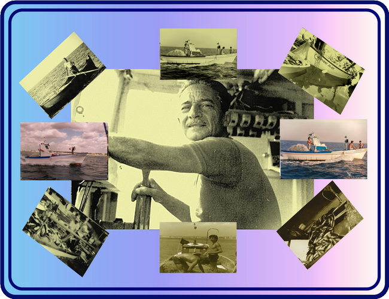

Mare & Outdoor
Porto Cesareo
Pescaturismo
Un’esperienza per vivere il mare da protagonista, scoprendo ritmi, paesaggi e tradizioni locali.
An experience to enjoy the sea from the inside, discovering local rhythms, landscapes and traditions.
Apri link / Open link
Inserire link reale.